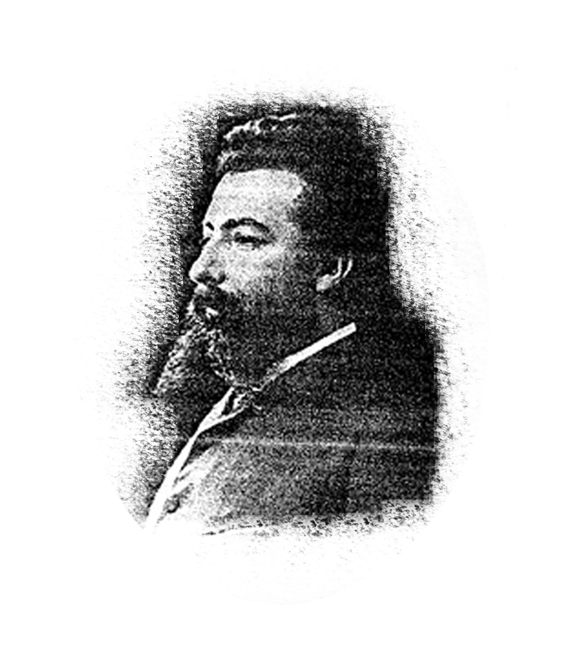

| Macías O Namorado | Juan Rodríguez de la Cámara |
 Rosalía de Castro Rosalía de Castro
|
 Manuel Barros |
| Nicasio Pajares | Camilo José Cela | Pepe Domingo Castaño | Masito Beiró |
| Ángel Grela |
Macías O Namorado
Biografía
Trobador medieval nado en Padrón, na aldea de Sande, en 1340, tal e como nos conta Juan Rodríguez, veciño de Padrón. O seu nome era Matías Cascallar e Guisande. A súa obra literaria compóñena uns poemas en galego e en castelán con galeguismos que se recollen no Cancioneiro de Baena e no Cancioneiro de Palacio. Aínda que a súa vida foi unha verdadeira novela.
Cóntase que sendo escudeiro do mestre de Calatrava, D. Enrique de Aragón, namorouse dunha doncela de clase alta que se atopaba ao servizo deste. A moza casou cun fidalgo de avoengo, pero seguiu mantendo relacións co poeta. O seu marido encerrou a Macías na torre de Arjonilla (Jaén) e, ofendido, o marqués arreboloulle unha lanza a través dunha reixa, dándolle morte. Sexa como for, o certo é que Macías recibiu sepultura na igrexa de Santa Catalina de Arjonilla.
Fonte foto: https://www.padronturismo.gal/wp-content/uploads/2020/07/menu-literariomacias.jpg
Juan Rodríguez de la Cámara
Biografía
Poeta e novelista padronés de literatura castelá. Nace en Padrón a finais do século XIV, en 1390. Vinculado á Corte do rei Juan II de Castela, desempeñou cargos eclesiásticos en Santiago e Tui antes de ingresar na Orde de San Francisco. Os seus derradeiros anos transcorreron no convento de San Francisco de Herbón. A el atribúeselle a achega dunha das palmeiras plantadas no claustro, traída desde Palestina e arrasada por un temporal.
É considerado un dos últimos trobadores da escola galega, aínda que a súa obra foi escrita en castelán. Na súa obra principal, Siervo Libre de Amor, relata a historia de amor de dous amantes, o que constitúe un preludio da novela sentimental e amatoria. Tamén é da súa autoría o Bursario, versión castelá das Heroidas de Ovidio.
Obras
POESÍA
- Bursario
- Poesía de cancionero
PROSA DIDÁCTICA
- Triunfo de las donas
- Cadira de honor
FICCIÓN SENTIMENTAL
- Siervo libre de amor
Fonte texto: Wikipedia | Fonte foto: https://www.padronturismo.gal
Rosalía de Castro
Biografía
Rosalía de Castro naceu en 1837 en Santiago de Compostela como filla de pais incógnitos, en realidade filla da fidalga María Teresa de la Cruz de Castro y Abadía e do sacerdote José Martínez Viojo.
As súas obras fundamentais son os libros de poemas en galego Cantares Gallegos (1863), revulsivo da dormida cultura galega, e Follas Novas (1880); e a obra en castelán En las orillas del Sar (1884). Rosalía recibiu o influxo do Romanticismo (Espronceda, Bécquer…) e admirou a Fernán Caballero como muller-escritora.
En 1858 casou co escritor Manuel M. Murguía co que tivo sete fillos, que faleceron sen descendencia. En 1885 finou na súa casa da Matanza, en Iria, e foi enterrada no cemiterio de Adina. En 1981 os seus restos foron trasladados á igrexa de Santo Domingo de Bonaval, ao Panteón de Galegos Ilustres, en Santiago de Compostela.
En 1947 créase o Padroado Rosalía de Castro para recuperar a Casa da Matanza, en Padrón, e convertela, en 1971, nun museo dedicado á súa memoria. A casa, onde residiu ata a súa morte en 1885, conserva practicamente inalterada a súa estrutura orixinal. Pódense contemplar no museo fotos da poetisa, dos seus familiares e amigos, recordos persoais, escritos e multitude de obxectos cotiáns da Galicia do século XIX. O Centro de Estudos Rosalianos, a Aula Pedagóxica e o Auditorio están en edificios adxacentes.
Obras
POESÍA
- (1857): La Flor
- (1863): Cantares gallegos
- A mi madre
- (1880): Follas novas
PROSA
- (1858): Lieders
- (1859): La hija del mar
- (1861): Flavio
- (1864): Cantos da miña terra
- (1865): El cadiceño
- Las literatas
- (1866): Ruinas
- (1867): El caballero de las botas azules
- (1881): El primer loco
- El Domingo de Ramos
- Padrón y las inundaciones
- Costumbres gallegas
Fonte texto: Wikipedia | Foto: https://www.poemas-del-alma.com/blog/wp-content/uploads/2017/05/rosalia-castro-400x557.jpg
Manuel Barros
Biografía
Padronés nado o 1 de febreiro de 1844. Tras realizar os seus estudos no Instituto de Santiago de Bacharelato, en 1862 emigrou a Cuba, onde foi dependente de escritorio ou caixeiro de casas comerciais.
Publicou os seus primeiros artigos periodísticos en La Voz de Cuba. En 1871 decidiu regresar a Galicia pero xa en 1872 saíu de novo da súa terra rumbo a Buenos Aires, onde colaborou en El Correo Español.
En 1875 publicou o seu único libro Ocios de un peregrino, que recolle as impresións da súa anterior viaxe a Galicia. En 1879 creou o primeiro Centro Galego de Buenos Aires, do que foi presidente. Colaborou en diversos periódicos, como La Nación Española, do que máis tarde ostentou o cargo de director. Casou o 6 de marzo de 1884 con Paula Florido y Toledo e o 26 do mesmo mes partiu rumbo á súa patria. Tras unha estancia na súa terra natal, percorreu España coa súa esposa, pero ao chegar a Sevilla morre repentinamente o 5 de xaneiro de 1885.
Obras
Literatura
- (1875): Ocios de un peregrino
Fonte foto: https://emigracion.xunta.gal/es/conociendo-galicia/aprende/biografia/manuel-vazquez-castro
Nicasio Pajares
Biografía
Naceu o 15 de decembro de 1881 en Padrón. Aos 14 anos emigra a Montevideo, onde vive o teu tío. Máis tarde regresa a Padrón e aquí comeza os seus estudos de contabilidade que remata despois en Madrid. Logo decide volver a emigrar, esta vez a Arxentina, onde funda con algún amigos El Despertar Hispánico. É en Buenos Aires onde se dedica por enteiro á literatura e ao xornalismo. En 1923 publica a súa primeira novela, El conquistador de los trópicos, que inaugura o subxénero de «novelas de dictadores». A esta séguena El pensador de la selva, Atorrántida, Don Quijote y el tío Sam ou Como pervirtieron a Palleiros. Morre o 26 de abril de 1956 e é soterrado no madrileño cemiterio de La Almudena.
OBRAS
- (1922): Teatro de la emigración
- (1923): El conquistador de los trópicos
- (1924): El pensador de la selva
- (1929): Atorrántida
- (1930): Don Quijote y el tío Sam
- (1931): Como pervirtieron a Palleiros
Fonte: Wikipedia | Foto: https://gl.wikipedia.org/wiki/Nicasio_Pajares
Camilo José Cela
Biografía
Camilo José Cela Trulock (1916-2002) naceu en Iria Flavia o 11 de maio. Pasou a súa infancia en Galicia ata que no ano 1925 se traslada coa súa familia a Madrid, onde en 1936 publica algúns dos seus primeiros poemas. A súa primeira novela, La Familia de Pascual Duarteveu a luz no 1945.
En 1956 funda a revista Papeles de Son Armadans, sendo un referente cultural da España dos anos 50 e60. Xa no 1957 ingresa na Real Academia Española. Autor de obras como La Familia de Pascual Duarte, Nuevas Andanzas y Desventuras del Lazarillo de Tormes, Viaje a la Alcarria ou La Colmena, gaña o Premio Nobel de Literatura en 1989, o Príncipe de Asturias (1987), o Cervantes (1995) e en 1996 recibe o Marquesado de Iria Flavia pola S.M. o rei D. Xoán Carlos.
En 1991 inaugura na vila padronesa a súa Fundación, un desexo que tiña desde había anos. A Fundación ten a súa sede en Iria Flavia, fronte á antiga colexiata de Santa María a Maior de Iria Flavia, nunhas casas construídas para residencia de canónicos no S. XVIII.
Dispón dunha superficie total de 11.000 metros cadrados, alberga unha biblioteca de máis de 45.000 volumes, unha pinacoteca con máis de 700 pinturas orixinais, un paraninfo de 178 prazas, aulas e salas de exposicións, ademais dunha ampla superficie axardinada. O Museo Ferrocarrileiro John Trulock forma parte do conxunto e amosa a historia do ferrocarril galego. Merece ser mencionada unha completa colección de manuscritos que reúne a práctica totalidade da súa obra.
A biblioteca componse de 45.000 volumes, incluídas todas as edicións e traducións da obra de Camilo José Cela. A hemeroteca comprende 1.200 títulos de revistas e periódicos cun total de 45.900 exemplares, entre os que se inclúe o arquivo completo da revista Son Armadans. O epistolario, pola súa parte, está integrado por máis de 90.000 cartas. A pinacoteca fórmana obras dos primeiros nomes da arte contemporánea (Picasso, Miró, Mosquera, Ulbricht, Zabaleta, Úrculo…) e diversos debuxos realizados por Lorca, Alberti ou o propio Cela.
Centos de títulos, condecoracións e premios, así como coleccións e obxectos que Camilo José Cela foi reunindo ao longo de súa vida e que, pola súa riqueza e variedade, suscitan o interése todo tipo de visitantes. Ademáis, é preciso sumar os legados de José M.ª Sánchez Silva, José García Nieto, M.ª del Carmen Pajares Escolano e Fernando Huarte, así como manuscritos doutros autores. Camilo José Cela faleceu en Madrid o 17 de xaneiro de 2002 e foi trasladado ao cemiterio de Adina, segundo o seu expreso desexo.
Obras máis importantes
- (1942): La familia de Pascual Duarte
- (1948): Viaje a la Alcarria
- (1951): La Colmena
- (1963): Las compañías convenientes y otros fingimientos y
cegueras - (1994): La cruz de San Andrés
PREMIOS
- (1956): Premio de la Crítica de narrativa castellana
- (1980): Gran cruz de la Orden de Isabel la Católica
- (1984): Premio Nacional de Narrativa
- (1986): Premio Sant Jordi de las Letras
Premio Ramón de Carranza - (1987): Premio Príncipe de Asturias de las Letras
- (1989): Premio Nobel de Literatura
- (1992): Gran cruz de la Orden de Carlos III
Premio Mariano de Cavia de Periodismo - (1994): Premio Planeta
- (1995): Premio Cervantes
Fonte: Wikipedia | Foto: https://fundacioncela.gal/gl/galeria
Pepe Domingo Castaño
Biografía
José Domingo Castaño Solar ( Lestrove, A Coruña, 8 de outubro de 1942), máis coñecido como Pepe Domingo Castaño, é un presentador de radio e televisión, cantante e escritor español.
Traballa como presentador e animador do programa Tempo de xogo da Cadea COPE. Tamén dirixiu O gran musical da Cadea SER e o programa de televisión 300 millóns, emitido por TVE. No seu haber conta con catro premios Ondas en recoñecemento á súa carreira e a súa achega ao mundo da comunicación; o «Premio Nacional ás Artes e as Ciencias aplicadas ao deporte» de 2011; e o «Premio Joaquín Prat de Radio» outorgado pola Academia Española da Radio.
Premios
- (1975, 1996, 2002 y 2005): Catro Premios Ondas
- (1989 y 2010): Dúas Antenas de Ouro
- (2005): Un Micrófono de Ouro
- (2012): Premio Nacional del Deporte
- (2013): Premio Emilio Castelar
- (2014): Premio Joaquín Prat
Fonte: Wikipedia | Foto: https://alacontra.es/2019/10/pepe-domingo-2/

Masito Beiró
Biografía
É fillo do pintor Manuel Beiró Buxán. No ano 1963 acada o primeiro premio de pintura infantil organizado polo xornal La Voz de Galicia e participa nunha colectiva de xoves valores na Coruña, no prestixioso local A Terraza. Bolseiro da Escola de Artes Mestre Mateo e diplomado en Xeografía e Historia pola Universidade de Santiago.
Traballou como xefe de prensa do concello de Padrón e como xornalista na Axencia EFE. Foi tamén correspondente do xornal El Correo Gallego dende 1986 ata 1990, foi director fundador da revista Petróglifo da Asociación Galega de Artes Gráficas, traballou en programas de radio, participoando amais en diversos ámbitos culturais da vila padronesa.
Unha escolma da súa obra foi exposta na Bienal Convento do Carme de Padrón, e no certame Bello Piñeiro de Ferrol. Participou en exposicións en Rianxo, Pontevedra, Santiago de Compostela, Arte Mostra Santiaguiño, O Courel e Forcarei.
Fixo ó longo da súa carreira como pintor diversas exposicións individuais; dende Barcelona a Noirmoutier-en-l'Île, París ou Buenos Aires. Malia padecer unha enfermidade dexenerativa da mácula ocular continúa a pintar.
Obras
ILUSTRACIÓNS
- (1978): “Pseudopoesía da Costa da Morte” de Arturo Romaní
- (1981 e 1983): “Paixón e vida dun poeta” e “Almenar Poético” os dous de Maximino Castiñeiras
- (1984): “Balada do vento na ría” de Xesús Santos
- (1985): Portada da revista Olláparo de Cedeira
- (1989): Portada da revista Lua Nova de Cornellà
- (1990): Portada da revista Ólisbos co retrato do escritor Miquel Riera
- (1992): “Poetas premiados no Concurso Rosalía” de Cornellà
- (1993): Irmandamento Noirmountier
- (1999): Carteis de festas, como os da Pascua de Padrón, A Anguía de Valga, Corrubedo, Congreso do Deportivo da Coruña
- (2003): “Diáspora.com” de J. Lobato, profesor da Universidade de Santiago.
Fonte: Galipedia | Foto: https://www.lavozdegalicia.es/noticia/santiago/padron/2018/06/22/masito-beiro-autor-ano-cartel-fiestas-santiaguino/00031529662269485837283.htm
Ángel Grela
Biografía
Natural da Ponte (1937-2016), puxo ao seu municipio de Padrón na portada dos grandes diarios de España cun fito aínda inalcanzable para o deporte da comarca, e como foi un desos personaxes que ensinou sen pretendelo.
En outubro de 1965, no Palacio de los Deportes de Madrid, gañou o título de Campión de España dos pesos cruceiros ao conseguir a vitoria por K.O. ante José Luis Velasco no noveno asalto, tras un tremendo golpe de dereita.
Iniciouse en Tenerife, a onde chegou nun buque petroleiro de Cepsa no que se enrolara para traballar e da man de Jorge dos Santos comezou a demostrar os seus dotes atléticos fiando combates como aficionado ata que o polo entón presidente da Federación Española de Boxeo e de European Boxing Union, Vicente Gil García, o leva a Madrid para comezar a súa etapa como boxeador profesional.
Palmarés
| Data | Opoñente | Lugar | Resultado |
|---|---|---|---|
| 1964 | Michel Blinker | Sparta Amfi, Sarpsborg (Noruega) | Vitoria por K.O. |
| 1965 | Jack Taruk | Melilla | Vitoria Nocaut Técnico |
| 1965 | Jose Luis Velasco | Palacio de los Deportes, Madrid | Campión de España por K.O. |
| 1966 | Francisco Romero | Praza de touros, Padrón | Vitoria por Nocaut Técnico |
| 1966 | Jose Manuel Gaztanaga | Campo Municipal do Souto, Padrón | Vitoria por K.O. |
Fonte: https://www.elcorreogallego.es/deportes/el-boxeador-de-los-punos-de-hierro-una-vida-en-imagenes-KD4270837 | Foto: http://www.boxeodemedianoche.com/?p=3481